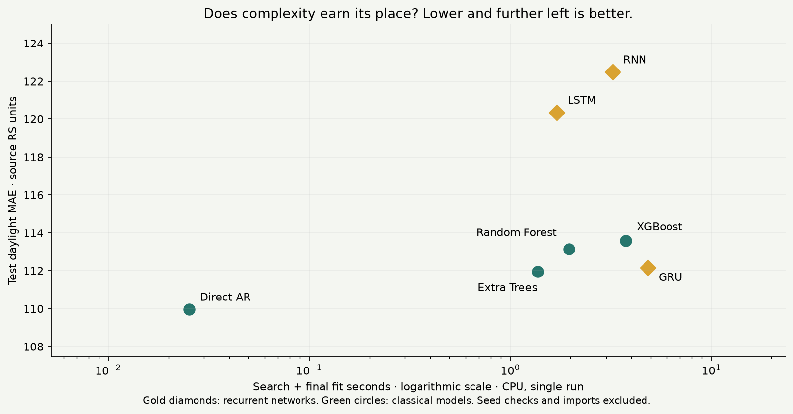

Separate the previous-day information window from the next-day targets. Fit preprocessing and early stopping only on available training history.
DANIEL DÍAZ-BEDOYA / SOLAR-IRRADIANCE RESEARCH
Tomorrow’s sunlight.
Today’s decision.
An experiment grounded in my solar-irradiance research, built to show how I turn real observations into reproducible forecasts and practical model decisions. Seven models. A next-day forecast. Accuracy and complexity measured together.
Explore the evidence ↗FROM PUBLISHED RESEARCH TO PRACTICAL RESULTS
Time-series understanding, demonstrated.
I’m Daniel Díaz-Bedoya. This experiment builds on my solar-irradiance research to show employers how I reason about time series: defining a forecast, protecting time boundaries, evaluating stability, and choosing models based on evidence.
View my ORCID research record ↗
Use expanding time folds, explain small-window uncertainty, compare with persistence, and assess whether added complexity earns a useful gain.
Research foundation
2023 / Energy Conversion and Management
Forecasting Univariate Solar Irradiance using Machine learning models: A case study of two Andean Cities ↗
Univariate solar-irradiance forecasting in Quito and Cuenca using AR, Random Forest and LSTM. The published abstract reports LSTM outperforming AR and comparable accuracy to Random Forest.
Coauthors: Daniel Díaz-Bedoya; Mario González-Rodríguez; Jean-Michel Clairand; Xavier Serrano-Guerrero; Guillermo Escrivá-Escrivá.
2025 / IET Smart Grid
Solar Irradiance Forecasting With Deep Learning and Ensemble Models: LSTM, Random Forest and Extra Trees With Multivariate Meteorological Data ↗
Related multivariate solar-irradiance research using LSTM, Random Forest and Extra Trees in Cuenca. It is included as research background, not evidence that this Quito CSV was used in that study.
Coauthors: Daniel Díaz-Bedoya; Mario González-Rodríguez; Xavier Serrano-Guerrero; Jean-Michel Clairand.
Source of the data description: the REMMAQ paragraph supplied for this project is my writing from the first article. It appears in Section 3.4 of the institutional manuscript.
New experiment, distinct results: the 2023 study uses next-hour forecasting and an 08:00–17:00 UTC−5 window; this portfolio predicts a next-day 06:00–18:00 profile. Its model definitions, tuning and evaluation also differ. The purpose here is to demonstrate time-series judgment, not reproduce an article’s ranking. In my earlier research, Cuenca was the main dataset and Quito provided supporting evidence. This experiment isolates Quito. Different datasets and protocols can favor different models; recognizing that context is part of sound time-series reasoning. The 2025 Cuenca study provides related research context, not provenance for this Quito CSV.
01 / SEE THE FORECAST
One day. Every daylight hour.
Compare the prediction with what actually happened. Explore every test day, including the most difficult one.
● Observed● Forecast● Repeat yesterday
View hourly values
02 / MODEL COMPARISON
Better than repeating yesterday?
Lower error is better. Night hours are excluded so easy zeros cannot inflate the result.
| Model | MAE | RMSE | 95th percentile daily MAE | Final fit time | Search + final fit |
|---|
The gold bar identifies the model selected by validation, even if another model performs better on the final test period. Final fit time excludes architecture search but includes training-only epoch selection for recurrent models. Search + final fit includes all four folds and two candidates; seed checks are separate. Single-run CPU timings exclude package installation and imports.
ACCURACY / COMPUTE / MAINTENANCE
Does extra complexity earn its place?

Small absolute runtime can still be operationally acceptable. Ratios against millisecond-scale linear fits are hardware-sensitive; weigh actual seconds and accuracy, not ratios alone. This is a compact CPU benchmark, not a claim that recurrent networks can never win.
Initialization sensitivity
Seed 42 is the fixed primary result. Seeds 7 and 123 reuse the selected width and epoch count; no best-seed selection or ensemble. This is a limited test-period sensitivity check, not a confidence interval. The historical test was already inspected in the earlier benchmark; no settings were changed in response to these new test scores. New external data is needed for a fresh confirmatory evaluation.
CROSS-TIME VALIDATION / FOUR EXPANDING FOLDS
Does performance hold across time?
Each fold trains on the past and predicts the next chronological block. Fold errors below use the selected parameter for each model. These folds also select parameters, so the final test remains the independent evaluation.
Standard deviation describes variation across four periods; it is not a confidence interval. Compare both error level and variation: consistently poor forecasts are not useful stability.
03 / THE OPERATIONAL QUESTION
Plan for the profile.
Prepare for the miss.
A solar forecast can inform storage scheduling, backup capacity, and expected daytime supply. This benchmark measures radiation forecast quality; it does not claim validated energy production or financial savings.
Selected model · worst test day—
Large errors are stress cases, not proof of a “black swan.” A historical benchmark cannot guarantee performance during unprecedented events.
MODEL INFO / FULL TRANSPARENCY
What is inside each model?
Shared contract: previous calendar day, 13 retained daylight observations → next calendar day, 13 daylight predictions. No future weather inputs. All learned settings use pre-test data. The cards describe the selected configurations from this run. Neural epoch selection uses inner stopping windows of only 41–83 days; this can make the chosen epoch count sensitive to weather mix. Expand each model for details.
04 / BUILT TO BE AUDITED
Simple inputs. Strict time boundaries.
Only RS from the preceding 24-hour window. Night hours are removed from the input and target vectors. No future weather, no random train/test split.
Four expanding validation folds, two candidates per model. Native multi-output forests, histogram-based XGBoost, and small RNN/GRU/LSTM models with training-only early stopping. Direct AR provides an interpretable comparison.
The final 20% of forecast dates form the test period. Models remain fixed, while each daily forecast receives the newly observed previous day.
Source: REMMAQ — Red Metropolitana de Monitoreo Atmosférico de Quito. Quito environmental data portal ↗. REMMAQ attribution is corroborated in my 2023 article; the specific CSV export has not been independently matched to the portal.
Section 3.4 of my first article describes a 2004–2018 collection and selection of 2017–2018 after a quality review. Review criteria and quality flags are not available here. This CSV covers February 2017–June 2018 and contains no precipitation column.
Station, timestamp timezone, measurement units, export URL, and reuse license remain unconfirmed. The project owner confirmed permission to publish these solar data on 2026-10-18; a general downstream reuse license is not asserted. Automated portal access returned HTTP 403. We retain source timestamp labels and report RS units rather than assume W/m².
Daylight window: . Identified from the earliest training block using a maximum reading above 5 RS units, a documented noise-floor assumption. Excluded hours are not presented as measured or predicted zeros.